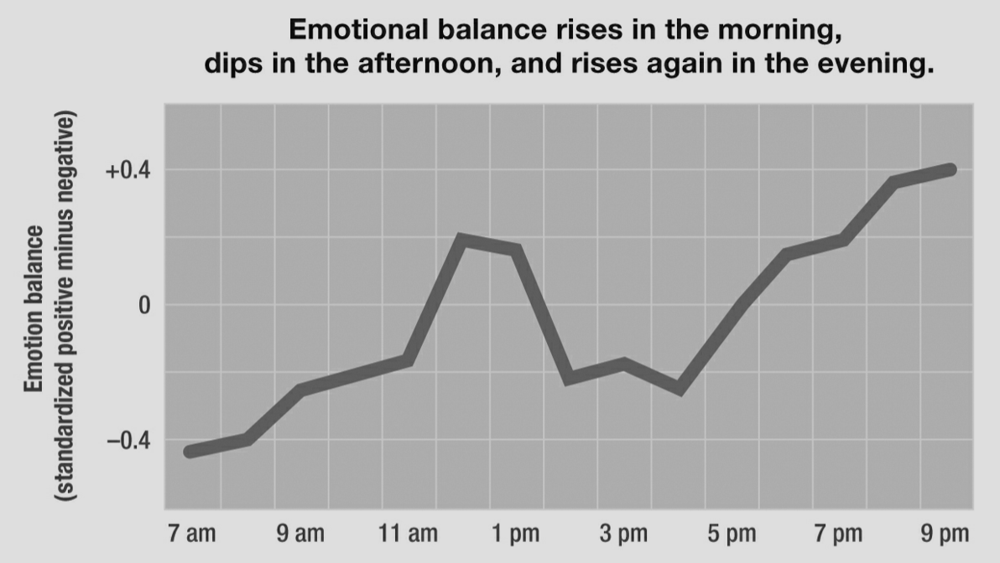

I’d like to share some findings from a book I read recently When: The Scientific Secrets of Perfect
Timing, and how
software engineers can use these findings to optimize their work day
Turns out when you do something is as important as what you’re doing
Timing is not an art, it’s actually a science
Twitter Sentiment Study
2 Cornell University sociologists, Michael Macy and Scott Golder analyzed over 500M tweets from 2.4M
users in 84
countries over two years. (Sep. 2011
https://www.aaas.org/news/science-tweets-reveal-role-circadian-rhythms-mood)
Fed tweets into LIWX (Linguistic Inquiry and Word Count) to analyze emotion
Found positive affect (language expressing feelings of being active, engaged, hopeful) generally rose
in
the morning,
plummeted in the afternoon, and climbed back up again in the early evening
Found the same temporal affective patterns regardless of geographic region, ethnicity, religion or
race
Daily pattern looks like: A peak, A trough, and A rebound
Skeptic Says
Results might not be that accurate due to twitter character limit
People are not their most authentic selves on social media üòÆ
Day Reconstruction Method

2006 study by behavioral scientists asked over 900 American women (mix of races, ages, household
incomes
and education levels) to characterize their emotions at frequent intervals throughout the day: happy,
frustrated, enjoying myself, annoyed etc.
Researches found consistent and strong bimodal pattern: Positive affect climbed in the morning hours,,
reaching optimal emotional point around midday, then good mood plummeted and stayed low throughout
afternoon,
and rises again in the early evening.
Researchers also found negative affect (feeling frustrated, worried, hassled) showed a reverse pattern -
rising in the
afternoon and sinking as the day drew to a close. Combining positive and negative to chart net good mood
(hourly ratings
for happiness and subtract ratings for frustration) - pattern is: Peak, Trough, Rebound
Skeptic Says
So what? Sometimes people are in a good mood, sometimes bad, whatever, can’t always be happy.
Mood is an internal state, surely that couldn’t have external consequences… could it?
From Mood Swings to Stock Swings
In a 2013 study, 3 American business school professors analyzed more than 26,000 earnings calls from
over 2,100 public
companies over 6 and a half years using linguistic algorithms similar to those used in the Twitter study
They examined whether the time of day influenced the emotional tenor of these critical
conversations and, as a
consequence, perhaps even the price of the company’s stock.
Calls held first thing in the morning turned out to be reasonably upbeat and positive.
As the day progressed, the ‚Äútone grew more negative and less resolute.‚Äù�
In the afternoon, negativity deepened, with mood recovering only after the market’s closing bell.
Amazingly, his pattern held “even after controlling for factors such as industry norms, financial
distress, growth opportunities, and the news that companies were reporting.”. Generally: afternoon calls
“were more negative, irritable, and combative” than morning calls.
time of the call and the subsequent mood it engendered influenced companies’ stock prices. Shares
declined
in response to negative tone—again, even after adjusting for actual good news or bad news—“leading to
temporary stock mispricing for firms hosting earnings calls later in the day.” (share prices eventually
righted themselves)
Results show economic rationality is no match for a biological clock forged during a few million years
of evolution. Even “sophisticated economic agents acting in real and highly incentivized settings are
influenced by diurnal rhythms in the performance of their professional duties.”
Skeptic Says
Ok, so maybe moods affect outcomes in high stakes situations...
But I'm not CEO of a Fortune 500 company, how does this affect "regular" people?
The Linda Problem
Linda is thirty-one years old, single, outspoken, and very bright. In college, Linda majored in philosophy. As
a student, she was deeply concerned with issues of discrimination and social justice, and participated in
antinuclear demonstrations.
Which is more likely?
a. Linda is a bank teller.
b. Linda is a bank teller and is active in the feminist movement.
Intuition would suggest (b) is the answer, concern for social justice and anti-nuke demonstrations would
suggest an
activist.
BUT correct answer is (a): This is not an opinion question, it’s entirely a matter of logic (remember,
question asked
which is more LIKELY): Bank tellers who are also feminists—just like bank tellers who yodel or despise
cilantro—are a
subset of all bank tellers, and subsets can never be larger than the full set they’re a part of.
In 1983, two researchers from Stanford and UBC posed Linda problem to study participants at different
times of day (9am
and 8pm) to illustrate “conjunction fallacy” - one of the ways in which our reasoning goes awry.
People were much more likely to answer correctly earlier in the day than later.
Vigilance
Our cognitive abilities do not remain static over the course of a day. During the sixteen or so hours
we’re awake, We
are smarter, faster, dimmer, slower, more creative, and less creative in some parts of the day than
others.
Linda problem is an analytic task - has a single correct answer that can be reached via logic
Adults tend to perform best on this sort of thinking during the mornings - when they are most VIGILANT
With Linda Problem, politically tinged material about Linda’s college experiences is a distraction. It
has no
relevance in resolving the question itself. When our minds are in vigilant mode, we can disregard such
distractions.
But vigilance has limits, after several hours mental guards grow tired, - Then sloppy logic, irrelevant
information can “sneak in”
Alertness and energy levels tend to plummet during afternoons, with that comes a corresponding fall in
ability to
remain focused and analytic powers decline.
Skeptic Says
Yeah yeah I get it, do important stuff in the morning
Not so fast!
Not all brainwork is the same
This is an “insight problem”
Unlike Linda problem, Reasoning in a methodical, algorithmic way won’t yield a correct answer.
Typically people start with a systematic approach, hit a wall, get frustrated, then eventually
experience a “flash of
illuminance” - an aha! moment that helps them see the facts in a fresh light
The Coin Problem
Ernesto is a dealer in antique coins. One day someone brings him a beautiful bronze coin. The coin has an
emperor’s head
on one side and the date 544 BC stamped on the other. Ernesto examines the coin—but instead of buying it, he
calls the
police. Why?